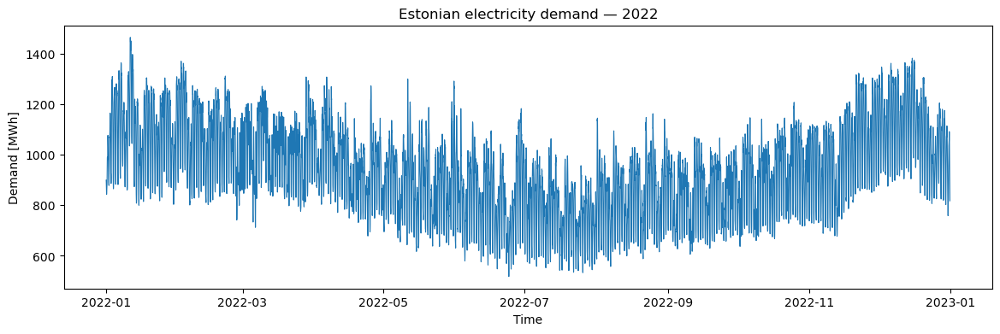
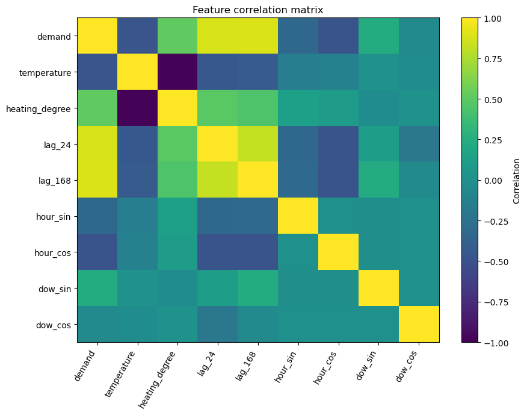
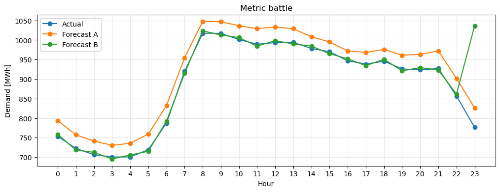

⚡ LAB: Data Science Lifecycle#
Mission: Can we trust the data before forecasting tomorrow’s electricity demand?#
Today you are part of an analytics team working with Estonian electricity-system data.
Your job is not to train a sophisticated machine-learning model.
Your job is to move through the complete data-science lifecycle and make defensible decisions about:
the business problem,
data sources,
data quality,
temporal patterns,
holidays and daylight saving time,
feature engineering,
data leakage,
transformations,
baseline forecasting,
performance metrics.
You may use an LLM, but throughout the lab follow one rule:
The LLM may suggest. You must verify.
Working cycle#
🧠 THINK → 🤖 ASK → 🧪 TEST → 📊 OBSERVE → ⚖️ DECIDE
Instructor note: This version contains suggested answers, expected observations, and facilitation notes. The student version contains the same activities without the completed interpretation.
Learning outcomes#
By the end of this practical, you should be able to:
turn a vague energy-sector request into a data-science problem;
distinguish data usefulness from data availability;
audit an hourly energy dataset for structural and temporal problems;
use an LLM to generate hypotheses without treating those hypotheses as evidence;
identify daily, weekly, annual, holiday, and DST effects;
distinguish an outlier from a confirmed error;
recognise simple forms of data leakage;
construct meaningful time-series features;
explain why different error metrics can prefer different forecasts;
use an LLM as a reviewer rather than as an answer generator.
0️⃣ Setup#
The practical uses the same course data as the lecture:
electricity-production and consumption_2022.csvweather_2022.csv
The loader first checks local course folders and then tries the public GitHub repository.
from pathlib import Path
import numpy as np
import pandas as pd
import matplotlib.pyplot as plt
from sklearn.metrics import (
mean_absolute_error,
mean_squared_error,
mean_absolute_percentage_error,
)
pd.set_option("display.max_columns", 30)
pd.set_option("display.width", 130)
try:
import ipywidgets as widgets
from IPython.display import display, Markdown, clear_output
WIDGETS_AVAILABLE = True
except Exception:
WIDGETS_AVAILABLE = False
from IPython.display import display, Markdown
print("ipywidgets available:", WIDGETS_AVAILABLE)
ipywidgets available: True
def load_course_csv(filename, delimiter=";", decimal="."):
local_candidates = [
Path("data") / filename,
Path("data2") / filename,
Path(filename),
Path("..") / "data" / filename,
]
local_file = next((p for p in local_candidates if p.exists()), None)
if local_file is not None:
print("Loaded local file:", local_file)
return pd.read_csv(local_file, delimiter=delimiter, decimal=decimal, index_col=False)
raw_url = (
"https://raw.githubusercontent.com/drmatson/energy_informatics/"
f"main/data/{filename.replace(' ', '%20')}"
)
print("Local file not found. Trying:", raw_url)
return pd.read_csv(raw_url, delimiter=delimiter, decimal=decimal, index_col=False)
elering_raw = load_course_csv(
"electricity-production and consumption_2022.csv",
delimiter=";",
decimal=",",
)
weather_raw = load_course_csv(
"weather_2022.csv",
delimiter=";",
decimal=".",
)
print("Electricity:", elering_raw.shape)
print("Weather:", weather_raw.shape)
Loaded local file: data/electricity-production and consumption_2022.csv
Loaded local file: data/weather_2022.csv
Electricity: (8760, 6)
Weather: (8732, 29)
def show_llm_prompt(text):
"""Display a prompt for copy/paste into the student's preferred LLM."""
display(Markdown("### 🤖 LLM prompt"))
display(Markdown(f"```text\n{text.strip()}\n```"))
1️⃣ Warm-up — Who does what?#
The lecture distinguishes overlapping roles such as:
Data Analyst
Data Scientist
Data Engineer
ML Engineer
Real projects overlap, so this is not a strict job-description test.
For each task below, choose the role that would most likely take the lead.
role_tasks = {
"Build and maintain a pipeline that automatically imports hourly meter data":
"Data Engineer",
"Explore demand patterns and explain them to management":
"Data Analyst",
"Design a forecasting experiment and select useful predictors":
"Data Scientist",
"Deploy and monitor a trained forecasting model in production":
"ML Engineer",
}
if WIDGETS_AVAILABLE:
role_options = ["Data Analyst", "Data Scientist", "Data Engineer", "ML Engineer"]
role_dropdowns = {}
for task in role_tasks:
print("\n" + task)
dd = widgets.Dropdown(options=["Choose..."] + role_options)
display(dd)
role_dropdowns[task] = dd
button = widgets.Button(description="Check answers")
output = widgets.Output()
def check_roles(_):
with output:
clear_output()
for task, correct in role_tasks.items():
chosen = role_dropdowns[task].value
mark = "✅" if chosen == correct else "◻️"
print(f"{mark} {task}\n Your choice: {chosen} | Suggested lead: {correct}\n")
print("Remember: in real teams these responsibilities often overlap.")
button.on_click(check_roles)
display(button, output)
else:
display(pd.DataFrame({"Task": list(role_tasks.keys())}))
print("ipywidgets is unavailable. Discuss the likely lead role for each task.")
Build and maintain a pipeline that automatically imports hourly meter data
Explore demand patterns and explain them to management
Design a forecasting experiment and select useful predictors
Deploy and monitor a trained forecasting model in production
2️⃣ Business Understanding — Ask before you model#
A manager says:
“We need a better electricity demand forecast.”
This is not yet a well-defined data-science problem.
Before using an LLM#
Write at least three questions you would ask the manager.
✅ Instructor answer#
Good questions include:
What exactly is the target: total Estonian system demand, regional demand, or a customer portfolio?
What is the forecast horizon?
What time resolution is required?
At what time is the forecast issued?
Which information is available at that moment?
How will the forecast be used operationally?
Which error is more costly: overprediction or underprediction?
Which metric will be used to compare forecasts?
What baseline are we trying to beat?
The key teaching point is that “better forecast” has no meaning until timing, target, use case, and evaluation are defined.
show_llm_prompt("""
You are joining an energy forecasting project.
The manager says:
"We need a better electricity demand forecast."
Before discussing models, ask 8 questions needed to turn this into a well-defined
data-science problem.
Group the questions under:
- prediction target,
- forecast horizon and timing,
- available data,
- evaluation,
- operational purpose.
Do NOT recommend machine-learning algorithms yet.
""")
🤖 LLM prompt
You are joining an energy forecasting project.
The manager says:
"We need a better electricity demand forecast."
Before discussing models, ask 8 questions needed to turn this into a well-defined
data-science problem.
Group the questions under:
- prediction target,
- forecast horizon and timing,
- available data,
- evaluation,
- operational purpose.
Do NOT recommend machine-learning algorithms yet.
Define today’s working problem#
For the rest of this practical, assume:
Target: total electricity demand
Resolution: hourly
Horizon: day-ahead
Context: Estonia
Goal: prepare trustworthy data and a defensible evaluation workflow
3️⃣ Data Collection — Useful does not mean available#
Before looking at the files, imagine you are constructing a day-ahead forecasting system.
Which of the following variables would you like to have?
candidate_sources = [
"Historical electricity demand",
"Tomorrow's actual demand",
"Calendar / weekday",
"Public-holiday calendar",
"Tomorrow's actual temperature",
"Day-ahead weather forecast",
"Historical electricity price",
"Tomorrow's realised electricity price",
"Day-ahead price forecast available before delivery",
"Sunrise / sunset",
"Wind speed",
"Social-media activity",
]
if WIDGETS_AVAILABLE:
source_checks = {s: widgets.Checkbox(description=s, indent=False) for s in candidate_sources}
for cb in source_checks.values():
display(cb)
print("Select what you would like to use. We will discuss availability afterwards.")
else:
display(pd.DataFrame({"Candidate source": candidate_sources}))
Select what you would like to use. We will discuss availability afterwards.
✅ Instructor answer#
The clearest leakage risks are:
tomorrow’s actual demand — it is the prediction target;
tomorrow’s actual temperature — useful but unknown when the forecast is issued;
tomorrow’s realised electricity price — also unknown beforehand.
By contrast, a weather forecast or a market-price forecast that truly exists before issuance can be legitimate inputs.
Teaching point: predictive power is not enough; feature availability must respect the forecasting timeline.
4️⃣ First contact with the data#
Inspect only a small sample first.
print("ELECTRICITY DATA")
display(elering_raw.head())
print(elering_raw.dtypes)
print("\nWEATHER DATA")
display(weather_raw.head())
print(weather_raw.dtypes)
ELECTRICITY DATA
| Ajatempel (UTC) | Kuupaev (Eesti aeg) | Tarbimine | Tootmine | Planeeritud tarbimine | Planeeritud tootmine | |
|---|---|---|---|---|---|---|
| 0 | 1640988000 | 01.01.2022 00:00 | 899.4 | 419.5 | 903.1 | 462.4 |
| 1 | 1640991600 | 01.01.2022 01:00 | 892.1 | 431.9 | 935.8 | 469.1 |
| 2 | 1640995200 | 01.01.2022 02:00 | 874.3 | 428.1 | 897.6 | 458.6 |
| 3 | 1640998800 | 01.01.2022 03:00 | 860.1 | 435.7 | 878.5 | 471.9 |
| 4 | 1641002400 | 01.01.2022 04:00 | 842.7 | 429.2 | 891.1 | 472.2 |
Ajatempel (UTC) int64
Kuupaev (Eesti aeg) object
Tarbimine float64
Tootmine float64
Planeeritud tarbimine float64
Planeeritud tootmine float64
dtype: object
WEATHER DATA
| Local time in Tallinn (airport) | T | Po | P | Pa | U | DD | Ff | ff10 | ff3 | N | WW | W1 | W2 | Tn | Tx | Cl | Nh | H | Cm | Ch | VV | Td | RRR | tR | E | Tg | E' | sss | |
|---|---|---|---|---|---|---|---|---|---|---|---|---|---|---|---|---|---|---|---|---|---|---|---|---|---|---|---|---|---|
| 0 | 31.12.2022 23:00 | 5.8 | 744.1 | 747.2 | -0.7 | 93.0 | Wind blowing from the south-southwest | 3.0 | NaN | NaN | 100%. | Rain shower(s), slight. | Shower(s). | Cloud covering more than 1/2 of the sky throug... | 2.9 | 6.0 | Stratus fractus or Cumulus fractus of bad weat... | 100%. | 200-300 | NaN | NaN | 35.0 | 4.8 | 0.1 | 3.0 | NaN | NaN | NaN | NaN |
| 1 | 31.12.2022 22:00 | 5.9 | 744.3 | 747.3 | -0.5 | 93.0 | Wind blowing from the south-west | 4.0 | 9.0 | 10.0 | 100%. | No significant weather observed. | No significant weather observed. | No significant weather observed. | 2.9 | 5.9 | NaN | 100%. | 200-300 | NaN | NaN | 35.0 | 4.8 | 0.2 | 3.0 | NaN | NaN | NaN | NaN |
| 2 | 31.12.2022 21:00 | 5.8 | 744.4 | 747.4 | -0.3 | 93.0 | Wind blowing from the south-southwest | 4.0 | 8.0 | NaN | 100%. | No significant weather observed. | No significant weather observed. | No significant weather observed. | 2.9 | 5.8 | NaN | 100%. | 100-200 | NaN | NaN | 35.0 | 4.8 | 0.2 | 3.0 | NaN | NaN | NaN | NaN |
| 3 | 31.12.2022 20:00 | 5.7 | 744.8 | 747.8 | -0.5 | 94.0 | Wind blowing from the south-west | 4.0 | 9.0 | NaN | 100%. | State of sky on the whole unchanged. | Drizzle. | Cloud covering more than 1/2 of the sky throug... | 2.6 | 5.8 | Stratus nebulosus or Stratus fractus other tha... | 100%. | 100-200 | NaN | NaN | 35.0 | 4.8 | 0.5 | 12.0 | NaN | NaN | NaN | NaN |
| 4 | 31.12.2022 19:00 | 5.4 | 744.8 | 747.9 | -0.8 | 96.0 | Wind blowing from the south-west | 4.0 | 8.0 | NaN | 100%. | No significant weather observed. | Visibility reduced. | No significant weather observed. | 2.6 | 5.5 | NaN | 100%. | 100-200 | NaN | NaN | 20.0 | 4.8 | 0.3 | 3.0 | NaN | NaN | NaN | NaN |
Local time in Tallinn (airport) object
T float64
Po float64
P float64
Pa float64
U float64
DD object
Ff float64
ff10 float64
ff3 float64
N object
WW object
W1 object
W2 object
Tn float64
Tx float64
Cl object
Nh object
H object
Cm object
Ch object
VV float64
Td float64
RRR object
tR float64
E object
Tg float64
E' object
sss object
dtype: object
print("Missing values — electricity")
display(elering_raw.isna().sum().sort_values(ascending=False).head(10))
print("\nMissing values — weather")
display(weather_raw.isna().sum().sort_values(ascending=False).head(15))
Missing values — electricity
Ajatempel (UTC) 0
Kuupaev (Eesti aeg) 0
Tarbimine 0
Tootmine 0
Planeeritud tarbimine 0
Planeeritud tootmine 0
dtype: int64
Missing values — weather
Tg 8732
E 8697
sss 8582
E' 8567
ff10 7427
Ch 6641
Cm 6612
ff3 6328
Cl 6120
Nh 2443
H 2211
N 125
Pa 108
Tx 83
Tn 83
dtype: int64
LLM as a checklist generator#
Send the LLM metadata and summaries, not the complete dataset.
summary_text = f"""
Electricity dataset:
shape = {elering_raw.shape}
dtypes:
{elering_raw.dtypes.to_string()}
Weather dataset:
shape = {weather_raw.shape}
dtypes:
{weather_raw.dtypes.to_string()}
Weather missing-value counts:
{weather_raw.isna().sum().sort_values(ascending=False).head(15).to_string()}
"""
show_llm_prompt(f"""
I have two hourly energy datasets.
{summary_text}
Act as a data-quality analyst.
Create a practical audit checklist for:
- timestamps,
- duplicates,
- missing values,
- data types,
- suspicious numeric values,
- temporal regularity.
For every check, state what pandas operation could test it.
Do not claim that any specific problem exists until it has been checked.
""")
🤖 LLM prompt
I have two hourly energy datasets.
Electricity dataset:
shape = (8760, 6)
dtypes:
Ajatempel (UTC) int64
Kuupaev (Eesti aeg) object
Tarbimine float64
Tootmine float64
Planeeritud tarbimine float64
Planeeritud tootmine float64
Weather dataset:
shape = (8732, 29)
dtypes:
Local time in Tallinn (airport) object
T float64
Po float64
P float64
Pa float64
U float64
DD object
Ff float64
ff10 float64
ff3 float64
N object
WW object
W1 object
W2 object
Tn float64
Tx float64
Cl object
Nh object
H object
Cm object
Ch object
VV float64
Td float64
RRR object
tR float64
E object
Tg float64
E' object
sss object
Weather missing-value counts:
Tg 8732
E 8697
sss 8582
E' 8567
ff10 7427
Ch 6641
Cm 6612
ff3 6328
Cl 6120
Nh 2443
H 2211
N 125
Pa 108
Tx 83
Tn 83
Act as a data-quality analyst.
Create a practical audit checklist for:
- timestamps,
- duplicates,
- missing values,
- data types,
- suspicious numeric values,
- temporal regularity.
For every check, state what pandas operation could test it.
Do not claim that any specific problem exists until it has been checked.
5️⃣ Data Detective 🕵️#
A colleague gives you a working copy of the demand table and says:
“Something may have happened during preprocessing.”
Find the hidden problems.
Your task#
Look for:
exact duplicate rows,
malformed timestamps,
missing demand,
implausible values,
unusual temporal structure.
Important: a repeated local clock hour is not automatically an error.
| Kuupaev (Eesti aeg) | Tarbimine | |
|---|---|---|
| 0 | 14.04.2022 12:00 | 1192.7 |
| 1 | 16.04.2022 11:00 | 873.3 |
| 2 | 12.03.2022 19:00 | 1076.7 |
| 3 | 09.04.2022 21:00 | 1013.0 |
| 4 | 06.06.2022 23:00 | 767.5 |
Rows: 8761
Instructor-only: Artificially injected issues are:
one missing demand;
demand = 0;
demand = 9000;
one malformed date;
one exact duplicated row.
The original dataset also contains legitimate DST structure, which becomes the trap later.
audit = detective.copy()
# TODO / CHECK 1: exact duplicate rows
duplicate_rows = audit.duplicated().sum()
print("Exact duplicated rows:", duplicate_rows)
# TODO / CHECK 2: malformed timestamps
audit["timestamp"] = pd.to_datetime(
audit["Kuupaev (Eesti aeg)"],
dayfirst=True,
errors="coerce"
)
print("Invalid timestamps:", audit["timestamp"].isna().sum())
# TODO / CHECK 3: missing demand
print("Missing demand values:", audit["Tarbimine"].isna().sum())
# TODO / CHECK 4: inspect extremes
display(audit["Tarbimine"].describe())
display(audit.nsmallest(5, "Tarbimine")[["timestamp", "Tarbimine"]])
display(audit.nlargest(5, "Tarbimine")[["timestamp", "Tarbimine"]])
Exact duplicated rows: 1
Invalid timestamps: 1
Missing demand values: 1
count 8760.000000
mean 934.751655
std 198.795838
min 0.000000
25% 803.400000
50% 926.350000
75% 1061.250000
max 9000.000000
Name: Tarbimine, dtype: float64
| timestamp | Tarbimine | |
|---|---|---|
| 6484 | 2022-01-30 07:00:00 | 0.0 |
| 2256 | 2022-06-24 04:00:00 | 518.0 |
| 8175 | 2022-07-26 04:00:00 | 533.3 |
| 631 | 2022-07-26 05:00:00 | 534.6 |
| 714 | 2022-07-22 04:00:00 | 534.8 |
| timestamp | Tarbimine | |
|---|---|---|
| 2568 | 2022-02-20 11:00:00 | 9000.0 |
| 6740 | 2022-01-11 10:00:00 | 1464.2 |
| 8121 | 2022-01-11 09:00:00 | 1454.8 |
| 1412 | 2022-01-11 17:00:00 | 1450.1 |
| 4576 | 2022-01-11 13:00:00 | 1448.3 |
✅ Instructor answer#
Suggested interpretation:
Observation |
Classification |
Action |
Evidence |
|---|---|---|---|
Exact duplicated row |
error |
remove one copy |
records are identical |
Malformed timestamp |
error |
correct from source or remove if unrecoverable |
cannot be parsed |
Missing demand |
missing data |
investigate / impute only with justified method |
target value absent |
Demand = 0 |
suspicious anomaly |
investigate before changing |
system demand of exactly zero is implausible |
Demand = 9000 |
suspicious anomaly |
investigate before changing |
far outside the normal range |
Repeated local DST hour |
valid special case |
keep and represent time correctly |
clock change produces two local observations |
Stress that 0 and 9000 are suspicious, but a production workflow should confirm source provenance before silently replacing them.
6️⃣ Build the analysis table#
Return to the original, uncorrupted files.
We keep:
actual demand,
planned demand,
Tallinn temperature.
elering = elering_raw.copy()
weather = weather_raw.copy()
elering["timestamp"] = pd.to_datetime(
elering["Kuupaev (Eesti aeg)"],
dayfirst=True,
errors="coerce"
)
weather["timestamp"] = pd.to_datetime(
weather["Local time in Tallinn (airport)"],
dayfirst=True,
errors="coerce"
)
demand = elering[
["timestamp", "Tarbimine", "Planeeritud tarbimine"]
].rename(
columns={
"Tarbimine": "demand",
"Planeeritud tarbimine": "planned_demand",
}
)
temperature = weather[["timestamp", "T"]].rename(columns={"T": "temperature"})
df = (
demand.merge(temperature, on="timestamp", how="left")
.sort_values("timestamp")
.reset_index(drop=True)
)
df["hour"] = df["timestamp"].dt.hour
df["weekday"] = df["timestamp"].dt.dayofweek
df["is_weekend"] = df["weekday"] >= 5
df["month"] = df["timestamp"].dt.month
df["date"] = df["timestamp"].dt.date
display(df.head())
print(df.shape)
| timestamp | demand | planned_demand | temperature | hour | weekday | is_weekend | month | date | |
|---|---|---|---|---|---|---|---|---|---|
| 0 | 2022-01-01 00:00:00 | 899.4 | 903.1 | -1.0 | 0 | 5 | True | 1 | 2022-01-01 |
| 1 | 2022-01-01 01:00:00 | 892.1 | 935.8 | -0.6 | 1 | 5 | True | 1 | 2022-01-01 |
| 2 | 2022-01-01 02:00:00 | 874.3 | 897.6 | 0.0 | 2 | 5 | True | 1 | 2022-01-01 |
| 3 | 2022-01-01 03:00:00 | 860.1 | 878.5 | -0.1 | 3 | 5 | True | 1 | 2022-01-01 |
| 4 | 2022-01-01 04:00:00 | 842.7 | 891.1 | -0.1 | 4 | 5 | True | 1 | 2022-01-01 |
(8761, 9)
7️⃣ Exploratory Data Analysis — Hypothesis Game#
First look at the full year.
Do not ask the LLM yet.
plt.figure(figsize=(14, 4))
plt.plot(df["timestamp"], df["demand"], linewidth=0.8)
plt.title("Estonian electricity demand — 2022")
plt.xlabel("Time")
plt.ylabel("Demand [MWh]")
plt.show()

✅ Instructor answer#
Expected observations include:
strong annual seasonality: higher demand in colder months;
a repeated intraday cycle;
weekly differences between working days and weekends;
occasional irregular days / abrupt changes;
likely weather dependence.
Students do not need to identify all of them from the annual plot alone.
show_llm_prompt("""
We have hourly total electricity demand for Estonia for one year.
Suggest 6 TESTABLE hypotheses about patterns that could exist in the series.
Include:
- intraday patterns,
- weekdays vs weekends,
- annual seasonality,
- weather,
- holidays / exceptional days.
For each hypothesis propose one plot or aggregation that would test it.
Important: phrase them as hypotheses, not as facts.
""")
🤖 LLM prompt
We have hourly total electricity demand for Estonia for one year.
Suggest 6 TESTABLE hypotheses about patterns that could exist in the series.
Include:
- intraday patterns,
- weekdays vs weekends,
- annual seasonality,
- weather,
- holidays / exceptional days.
For each hypothesis propose one plot or aggregation that would test it.
Important: phrase them as hypotheses, not as facts.
🔬 Interactive Hypothesis Explorer#
Choose a view and inspect whether the proposed pattern is visible.
def plot_hypothesis(view="Hour of day"):
plt.figure(figsize=(10, 4))
if view == "Hour of day":
x = df.groupby("hour")["demand"].mean()
plt.plot(x.index, x.values, marker="o")
plt.xticks(range(24))
plt.xlabel("Hour")
plt.ylabel("Mean demand [MWh]")
elif view == "Month":
x = df.groupby("month")["demand"].mean()
plt.plot(x.index, x.values, marker="o")
plt.xticks(range(1, 13))
plt.xlabel("Month")
plt.ylabel("Mean demand [MWh]")
elif view == "Weekday vs weekend":
x = (
df.groupby(["is_weekend", "hour"])["demand"]
.mean()
.unstack(0)
.rename(columns={False: "Weekday", True: "Weekend"})
)
plt.plot(x.index, x["Weekday"], marker="o", label="Weekday")
plt.plot(x.index, x["Weekend"], marker="o", label="Weekend")
plt.xticks(range(24))
plt.xlabel("Hour")
plt.ylabel("Mean demand [MWh]")
plt.legend()
elif view == "Temperature":
sample = df.dropna(subset=["temperature", "demand"]).sample(
n=min(2500, df.dropna(subset=["temperature", "demand"]).shape[0]),
random_state=42
)
plt.scatter(sample["temperature"], sample["demand"], alpha=0.25)
plt.xlabel("Temperature [°C]")
plt.ylabel("Demand [MWh]")
plt.title(view)
plt.grid(alpha=0.3)
plt.show()
if WIDGETS_AVAILABLE:
widgets.interact(
plot_hypothesis,
view=widgets.Dropdown(
options=["Hour of day", "Weekday vs weekend", "Month", "Temperature"],
value="Hour of day",
description="View:"
)
);
else:
for v in ["Hour of day", "Weekday vs weekend", "Month", "Temperature"]:
plot_hypothesis(v)
✅ Instructor answer#
Typical observations:
Hour of day: demand is lower overnight and increases during active daytime/evening hours.
Weekday vs weekend: weekend profiles are generally lower and shaped differently from working days.
Month: winter months have higher mean demand; summer months lower.
Temperature: demand tends to be higher at lower temperatures, but the scatter is broad and the relation is confounded by season/time.
Emphasise: the scatterplot does not establish that temperature alone causes the demand pattern.
🤖 LLM as a critic, not as an oracle#
show_llm_prompt("""
Suppose I observe a negative correlation between outdoor temperature
and electricity demand in Estonia.
Give me 4 reasons why I should NOT conclude that
"temperature alone causes the observed demand changes".
Discuss:
- seasonality,
- confounding,
- time dependence,
- correlation versus causation.
""")
🤖 LLM prompt
Suppose I observe a negative correlation between outdoor temperature
and electricity demand in Estonia.
Give me 4 reasons why I should NOT conclude that
"temperature alone causes the observed demand changes".
Discuss:
- seasonality,
- confounding,
- time dependence,
- correlation versus causation.
8️⃣ Interactive Time-Series Explorer#
Zooming changes what you can see.
Use the controls to inspect:
a whole month,
a short interval,
actual vs planned demand.
def plot_period(month=3, days=7, show_planned=True):
subset = df[df["month"] == month].copy()
if subset.empty:
return
start = subset["timestamp"].min()
end = start + pd.Timedelta(days=int(days))
subset = subset[(subset["timestamp"] >= start) & (subset["timestamp"] < end)]
plt.figure(figsize=(14, 4))
plt.plot(subset["timestamp"], subset["demand"], label="Actual demand")
if show_planned:
plt.plot(subset["timestamp"], subset["planned_demand"], label="Planned demand", alpha=0.8)
plt.title(f"Month {month}: first {days} days")
plt.xlabel("Time")
plt.ylabel("MWh")
plt.grid(alpha=0.3)
plt.legend()
plt.show()
if WIDGETS_AVAILABLE:
widgets.interact(
plot_period,
month=widgets.IntSlider(min=1, max=12, step=1, value=3, description="Month"),
days=widgets.IntSlider(min=1, max=14, step=1, value=7, description="Days"),
show_planned=widgets.Checkbox(value=True, description="Show planned")
);
else:
plot_period()
9️⃣ Holiday Detective 🏖️#
Calendar patterns are not perfectly regular.
Before looking at the graph, predict what you expect around:
Independence Day,
Midsummer,
Christmas.
holiday_windows = {
"Independence Day": ("2022-02-21", "2022-02-28"),
"Midsummer": ("2022-06-20", "2022-06-27"),
"Christmas": ("2022-12-19", "2022-12-26"),
}
reference_windows = {
"Independence Day": ("2022-02-14", "2022-02-21"),
"Midsummer": ("2022-06-13", "2022-06-20"),
"Christmas": ("2022-12-12", "2022-12-19"),
}
def holiday_comparison(event="Midsummer"):
h0, h1 = holiday_windows[event]
r0, r1 = reference_windows[event]
holiday = df[(df["timestamp"] >= h0) & (df["timestamp"] < h1)].copy()
ref = df[(df["timestamp"] >= r0) & (df["timestamp"] < r1)].copy()
holiday["hour_of_week"] = np.arange(len(holiday))
ref["hour_of_week"] = np.arange(len(ref))
plt.figure(figsize=(13, 4))
plt.plot(ref["hour_of_week"], ref["demand"], label="Reference week")
plt.plot(holiday["hour_of_week"], holiday["demand"], label=event)
plt.xlabel("Hour of week")
plt.ylabel("Demand [MWh]")
plt.title(event)
plt.grid(alpha=0.3)
plt.legend()
plt.show()
if WIDGETS_AVAILABLE:
widgets.interact(
holiday_comparison,
event=widgets.Dropdown(options=list(holiday_windows), value="Midsummer")
);
else:
holiday_comparison("Midsummer")
✅ Instructor answer#
hour and weekday encode the normal calendar rhythm, but public holidays can behave like atypical weekends or special-event days.
A model without a holiday indicator may therefore expect an ordinary Thursday/Friday profile even when human activity is very different.
🔟 DST Trap ⏰ — Does every day have 24 hours?#
Test the assumption:
one local calendar day = 24 hourly observations
rows_per_day = df.groupby(df["timestamp"].dt.date).size()
unusual_day_lengths = rows_per_day[rows_per_day != 24]
display(unusual_day_lengths)
timestamp
2022-10-30 25
dtype: int64
✅ Instructor answer#
No.
For Estonia in 2022:
27 March is the spring DST transition: one local hour is skipped, so the day has 23 observations.
30 October is the autumn DST transition: one local clock hour occurs twice, so the day has 25 observations.
This is a valid property of local civil time, not a missing/duplicated-data error.
for day in ["2022-03-27", "2022-10-30"]:
part = df[df["timestamp"].dt.strftime("%Y-%m-%d") == day]
print("\n", day, "rows:", len(part))
display(part[["timestamp", "demand"]])
2022-03-27 rows: 24
| timestamp | demand | |
|---|---|---|
| 2040 | 2022-03-27 00:00:00 | 857.0 |
| 2041 | 2022-03-27 01:00:00 | 838.9 |
| 2042 | 2022-03-27 02:00:00 | 821.3 |
| 2043 | 2022-03-27 03:00:00 | 821.3 |
| 2044 | 2022-03-27 04:00:00 | 819.5 |
| 2045 | 2022-03-27 05:00:00 | 829.1 |
| 2046 | 2022-03-27 06:00:00 | 845.1 |
| 2047 | 2022-03-27 07:00:00 | 861.1 |
| 2048 | 2022-03-27 08:00:00 | 887.1 |
| 2049 | 2022-03-27 09:00:00 | 900.7 |
| 2050 | 2022-03-27 10:00:00 | 876.3 |
| 2051 | 2022-03-27 11:00:00 | 820.6 |
| 2052 | 2022-03-27 12:00:00 | 816.5 |
| 2053 | 2022-03-27 13:00:00 | 804.4 |
| 2054 | 2022-03-27 14:00:00 | 793.7 |
| 2055 | 2022-03-27 15:00:00 | 832.5 |
| 2056 | 2022-03-27 16:00:00 | 903.5 |
| 2057 | 2022-03-27 17:00:00 | 972.4 |
| 2058 | 2022-03-27 18:00:00 | 1005.5 |
| 2059 | 2022-03-27 19:00:00 | 1028.8 |
| 2060 | 2022-03-27 20:00:00 | 1069.9 |
| 2061 | 2022-03-27 21:00:00 | 1032.6 |
| 2062 | 2022-03-27 22:00:00 | 981.4 |
| 2063 | 2022-03-27 23:00:00 | 916.7 |
2022-10-30 rows: 25
| timestamp | demand | |
|---|---|---|
| 7248 | 2022-10-30 00:00:00 | 768.0 |
| 7249 | 2022-10-30 01:00:00 | 748.9 |
| 7250 | 2022-10-30 02:00:00 | 734.1 |
| 7251 | 2022-10-30 03:00:00 | 724.2 |
| 7252 | 2022-10-30 04:00:00 | 718.8 |
| 7253 | 2022-10-30 04:00:00 | 718.8 |
| 7254 | 2022-10-30 05:00:00 | 729.9 |
| 7255 | 2022-10-30 06:00:00 | 763.2 |
| 7256 | 2022-10-30 07:00:00 | 786.3 |
| 7257 | 2022-10-30 08:00:00 | 838.2 |
| 7258 | 2022-10-30 09:00:00 | 901.9 |
| 7259 | 2022-10-30 10:00:00 | 917.2 |
| 7260 | 2022-10-30 11:00:00 | 944.4 |
| 7261 | 2022-10-30 12:00:00 | 967.6 |
| 7262 | 2022-10-30 13:00:00 | 978.3 |
| 7263 | 2022-10-30 14:00:00 | 968.2 |
| 7264 | 2022-10-30 15:00:00 | 953.2 |
| 7265 | 2022-10-30 16:00:00 | 962.4 |
| 7266 | 2022-10-30 17:00:00 | 1032.4 |
| 7267 | 2022-10-30 18:00:00 | 1038.1 |
| 7268 | 2022-10-30 19:00:00 | 1011.2 |
| 7269 | 2022-10-30 20:00:00 | 973.2 |
| 7270 | 2022-10-30 21:00:00 | 931.2 |
| 7271 | 2022-10-30 22:00:00 | 874.2 |
| 7272 | 2022-10-30 23:00:00 | 815.8 |
Discussion#
What could go wrong if someone:
df = df.drop_duplicates("timestamp")
without understanding DST?
✅ Instructor answer#
On the autumn DST day, two different physical hours can share the same naive local clock label. Blindly dropping duplicate local timestamps may remove a legitimate observation.
Robust options include:
retain an unambiguous UTC timestamp;
use timezone-aware local datetimes that distinguish DST offsets.
This is a good example where a generic LLM/data-cleaning recommendation can damage correct domain data.
1️⃣1️⃣ Outlier Court ⚖️#
An outlier is not automatically an error.
Build a robust IQR-based list of suspicious demand observations and inspect them in context.
q1 = df["demand"].quantile(0.25)
q3 = df["demand"].quantile(0.75)
iqr = q3 - q1
lower = q1 - 1.5 * iqr
upper = q3 + 1.5 * iqr
candidates = df[(df["demand"] < lower) | (df["demand"] > upper)].copy()
print("IQR limits:", round(lower, 2), "to", round(upper, 2))
print("Candidate rows:", len(candidates))
display(candidates[["timestamp", "demand", "planned_demand"]].head(15))
IQR limits: 416.4 to 1448.4
Candidate rows: 4
| timestamp | demand | planned_demand | |
|---|---|---|---|
| 249 | 2022-01-11 09:00:00 | 1454.8 | 1540.5 |
| 250 | 2022-01-11 10:00:00 | 1464.2 | 1526.4 |
| 251 | 2022-01-11 11:00:00 | 1463.6 | 1508.5 |
| 257 | 2022-01-11 17:00:00 | 1450.1 | 1521.9 |
def inspect_candidate(row_number=0, window_hours=12):
if len(candidates) == 0:
print("No IQR candidates found.")
return
row_number = min(int(row_number), len(candidates)-1)
row = candidates.iloc[row_number]
t = row["timestamp"]
part = df[
(df["timestamp"] >= t - pd.Timedelta(hours=window_hours)) &
(df["timestamp"] <= t + pd.Timedelta(hours=window_hours))
]
plt.figure(figsize=(12, 4))
plt.plot(part["timestamp"], part["demand"], marker="o", label="Demand")
plt.axvline(t, linestyle="--", label="Candidate")
plt.title(f"Candidate: {t}")
plt.ylabel("Demand [MWh]")
plt.grid(alpha=0.3)
plt.legend()
plt.show()
if WIDGETS_AVAILABLE and len(candidates) > 0:
widgets.interact(
inspect_candidate,
row_number=widgets.IntSlider(
min=0, max=max(0, len(candidates)-1), step=1, value=0,
description="Candidate"
),
window_hours=widgets.IntSlider(
min=3, max=48, step=3, value=12,
description="± hours"
),
);
else:
inspect_candidate(0)
✅ Instructor answer#
The defensible default is often “needs more information.”
A statistical rule identifies unusual values, not their cause. Useful evidence could include:
neighbouring observations,
planned demand,
other system variables,
known outages/events,
source-system flags,
comparison with independent data.
Students should not delete a value solely because an IQR rule labels it an outlier.
1️⃣2️⃣ Feature Factory 🏗️#
Ask the LLM for candidate predictors, then perform a timeline audit.
show_llm_prompt("""
We are building a day-ahead hourly electricity-demand forecast for Estonia.
Suggest 12 candidate features using:
- historical demand,
- calendar information,
- weather,
- energy-market information.
For each feature state:
1. why it may help,
2. when it becomes available,
3. whether using the realised value can cause data leakage.
Do not write modelling code.
""")
🤖 LLM prompt
We are building a day-ahead hourly electricity-demand forecast for Estonia.
Suggest 12 candidate features using:
- historical demand,
- calendar information,
- weather,
- energy-market information.
For each feature state:
1. why it may help,
2. when it becomes available,
3. whether using the realised value can cause data leakage.
Do not write modelling code.
Leakage game#
Classify the candidates below as safe, conditionally safe, or leakage for a day-ahead forecast.
leakage_candidates = [
"Demand 7 days ago",
"Hour of delivery",
"Day of week",
"Public-holiday flag",
"Actual temperature during tomorrow's delivery hour",
"Day-ahead weather forecast available before issuance",
"Tomorrow's actual demand",
"Realised electricity price during tomorrow's delivery hour",
"A price forecast available before forecast issuance",
]
if WIDGETS_AVAILABLE:
leak_dd = {}
for item in leakage_candidates:
print("\n" + item)
dd = widgets.Dropdown(
options=["Choose...", "Safe", "Conditionally safe", "Leakage"],
value="Choose..."
)
display(dd)
leak_dd[item] = dd
else:
display(pd.DataFrame({"Feature": leakage_candidates}))
Demand 7 days ago
Hour of delivery
Day of week
Public-holiday flag
Actual temperature during tomorrow's delivery hour
Day-ahead weather forecast available before issuance
Tomorrow's actual demand
Realised electricity price during tomorrow's delivery hour
A price forecast available before forecast issuance
✅ Suggested classifications#
Feature |
Classification |
|---|---|
Demand 7 days ago |
Safe |
Hour of delivery |
Safe |
Day of week |
Safe |
Public-holiday flag |
Safe |
Actual tomorrow temperature |
Leakage |
Day-ahead weather forecast available beforehand |
Conditionally safe |
Tomorrow’s actual demand |
Leakage |
Realised tomorrow price |
Leakage |
Price forecast genuinely available beforehand |
Conditionally safe |
“Conditionally safe” means the analyst must verify the historical availability timestamp of the forecast, not merely that such a forecast exists today.
Create a few meaningful features#
We will create:
lag_24lag_168cyclic hour
cyclic weekday
heating-degree feature
The heating-degree feature is:
[ HDD = \max(18 - T, 0) ]
It is only an illustrative transformation here.
feat = df.copy()
feat["lag_24"] = feat["demand"].shift(24)
feat["lag_168"] = feat["demand"].shift(168)
feat["hour_sin"] = np.sin(2*np.pi*feat["hour"]/24)
feat["hour_cos"] = np.cos(2*np.pi*feat["hour"]/24)
feat["dow_sin"] = np.sin(2*np.pi*feat["weekday"]/7)
feat["dow_cos"] = np.cos(2*np.pi*feat["weekday"]/7)
feat["heating_degree"] = np.maximum(18 - feat["temperature"], 0)
display(
feat[
[
"timestamp", "demand", "temperature",
"lag_24", "lag_168",
"hour_sin", "hour_cos",
"heating_degree"
]
].head(175).tail(8)
)
| timestamp | demand | temperature | lag_24 | lag_168 | hour_sin | hour_cos | heating_degree | |
|---|---|---|---|---|---|---|---|---|
| 167 | 2022-01-07 23:00:00 | 1039.8 | -8.8 | 1018.1 | NaN | -0.258819 | 9.659258e-01 | 26.8 |
| 168 | 2022-01-08 00:00:00 | 1004.3 | -8.9 | 955.7 | 899.4 | 0.000000 | 1.000000e+00 | 26.9 |
| 169 | 2022-01-08 01:00:00 | 982.6 | -10.2 | 929.1 | 892.1 | 0.258819 | 9.659258e-01 | 28.2 |
| 170 | 2022-01-08 02:00:00 | 962.7 | -10.4 | 918.8 | 874.3 | 0.500000 | 8.660254e-01 | 28.4 |
| 171 | 2022-01-08 03:00:00 | 960.8 | -10.9 | 906.4 | 860.1 | 0.707107 | 7.071068e-01 | 28.9 |
| 172 | 2022-01-08 04:00:00 | 955.1 | -10.3 | 908.0 | 842.7 | 0.866025 | 5.000000e-01 | 28.3 |
| 173 | 2022-01-08 05:00:00 | 963.3 | -10.7 | 940.1 | 844.7 | 0.965926 | 2.588190e-01 | 28.7 |
| 174 | 2022-01-08 06:00:00 | 992.6 | -9.9 | 1048.9 | 852.2 | 1.000000 | 6.123234e-17 | 27.9 |
✅ Instructor answer#
Heating degree encodes a domain hypothesis: below a reference temperature, heating-related demand may increase; above that point, additional warmth does not contribute to heating need in the same way.
It is therefore a non-linear, domain-informed transformation rather than a claim that it is automatically superior.
1️⃣3️⃣ Transformation Playground 🎛️#
The lecture discusses log, square, square-root, and scaling transformations.
Explore how a transformation changes the distribution, not the underlying information.
def transform_values(series, method):
x = series.dropna().astype(float)
if method == "none":
return x
if method == "sqrt":
shift = max(0, -x.min())
return np.sqrt(x + shift)
if method == "log1p":
shift = max(0, -x.min())
return np.log1p(x + shift)
if method == "square":
return x**2
return x
transform_sources = {
"Demand": df["demand"],
"Temperature": df["temperature"],
}
# Add wind speed if the expected column exists
if "Ff" in weather.columns:
transform_sources["Wind speed"] = pd.to_numeric(weather["Ff"], errors="coerce")
def transformation_playground(variable="Demand", method="none"):
original = transform_sources[variable].dropna().astype(float)
transformed = transform_values(original, method)
print("Original skewness:", round(original.skew(), 3))
print("Transformed skewness:", round(pd.Series(transformed).skew(), 3))
plt.figure(figsize=(8, 4))
plt.hist(original, bins=30, alpha=0.5, label="Original")
plt.hist(transformed, bins=30, alpha=0.5, label=method)
plt.title(f"{variable}: {method}")
plt.xlabel("Value")
plt.ylabel("Count")
plt.legend()
plt.show()
if WIDGETS_AVAILABLE:
widgets.interact(
transformation_playground,
variable=widgets.Dropdown(options=list(transform_sources), value="Demand"),
method=widgets.Dropdown(
options=["none", "sqrt", "log1p", "square"],
value="none"
)
);
else:
transformation_playground("Demand", "sqrt")
✅ Instructor answer#
No.
Transformations should serve a modelling or interpretability purpose. A visually more symmetric distribution is not automatically “better,” especially when:
the model does not require normal inputs;
the transformation damages physical interpretability;
zeros/negatives create mathematical issues;
the transformation does not improve validation performance.
The correct question is what problem the transformation solves.
1️⃣4️⃣ Correlation Puzzle#
Correlation is useful for exploration, but:
correlation is not causation;
highly correlated features may be redundant;
low linear correlation does not imply no predictive relationship.
corr_cols = [
"demand", "temperature", "heating_degree",
"lag_24", "lag_168",
"hour_sin", "hour_cos",
"dow_sin", "dow_cos",
]
corr = feat[corr_cols].corr(numeric_only=True)
display(corr.round(2))
plt.figure(figsize=(9, 7))
plt.imshow(corr, aspect="auto", vmin=-1, vmax=1)
plt.colorbar(label="Correlation")
plt.xticks(range(len(corr.columns)), corr.columns, rotation=60, ha="right")
plt.yticks(range(len(corr.index)), corr.index)
plt.title("Feature correlation matrix")
plt.tight_layout()
plt.show()
| demand | temperature | heating_degree | lag_24 | lag_168 | hour_sin | hour_cos | dow_sin | dow_cos | |
|---|---|---|---|---|---|---|---|---|---|
| demand | 1.00 | -0.47 | 0.51 | 0.88 | 0.89 | -0.32 | -0.48 | 0.23 | -0.04 |
| temperature | -0.47 | 1.00 | -0.98 | -0.45 | -0.43 | -0.14 | -0.12 | 0.02 | -0.03 |
| heating_degree | 0.51 | -0.98 | 1.00 | 0.49 | 0.45 | 0.13 | 0.11 | -0.03 | 0.03 |
| lag_24 | 0.88 | -0.45 | 0.49 | 1.00 | 0.82 | -0.32 | -0.48 | 0.11 | -0.21 |
| lag_168 | 0.89 | -0.43 | 0.45 | 0.82 | 1.00 | -0.32 | -0.48 | 0.23 | -0.04 |
| hour_sin | -0.32 | -0.14 | 0.13 | -0.32 | -0.32 | 1.00 | 0.00 | -0.00 | 0.00 |
| hour_cos | -0.48 | -0.12 | 0.11 | -0.48 | -0.48 | 0.00 | 1.00 | -0.00 | 0.00 |
| dow_sin | 0.23 | 0.02 | -0.03 | 0.11 | 0.23 | -0.00 | -0.00 | 1.00 | 0.00 |
| dow_cos | -0.04 | -0.03 | 0.03 | -0.21 | -0.04 | 0.00 | 0.00 | 0.00 | 1.00 |

✅ Instructor answer#
Not always.
Very high correlation suggests redundancy and can be problematic for coefficient interpretation in linear models, but the decision depends on:
the model class,
stability,
interpretability,
regularisation,
validation results.
The main lesson is to notice and investigate redundancy rather than applying a universal deletion rule.
1️⃣5️⃣ Modelling — only a baseline#
Detailed modelling comes later in the course.
For now, create a very simple forecast:
same hour one week ago
This is already a forecasting model — just not an ML model.
baseline = feat.dropna(subset=["demand", "lag_168"]).copy()
baseline["prediction"] = baseline["lag_168"]
print("Rows available for baseline:", len(baseline))
display(baseline[["timestamp", "demand", "prediction"]].head())
Rows available for baseline: 8593
| timestamp | demand | prediction | |
|---|---|---|---|
| 168 | 2022-01-08 00:00:00 | 1004.3 | 899.4 |
| 169 | 2022-01-08 01:00:00 | 982.6 | 892.1 |
| 170 | 2022-01-08 02:00:00 | 962.7 | 874.3 |
| 171 | 2022-01-08 03:00:00 | 960.8 | 860.1 |
| 172 | 2022-01-08 04:00:00 | 955.1 | 842.7 |
1️⃣6️⃣ Metrics Playground 📏#
Compare MAE, RMSE, and MAPE.
First compute them for the weekly baseline.
def metrics(y_true, y_pred):
return {
"MAE": mean_absolute_error(y_true, y_pred),
"RMSE": np.sqrt(mean_squared_error(y_true, y_pred)),
"MAPE_%": mean_absolute_percentage_error(y_true, y_pred) * 100,
}
baseline_metrics = metrics(baseline["demand"], baseline["prediction"])
display(pd.DataFrame([baseline_metrics], index=["Weekly naive"]).round(3))
| MAE | RMSE | MAPE_% | |
|---|---|---|---|
| Weekly naive | 58.257 | 82.093 | 6.212 |
Interactive error experiment#
We will modify a 24-hour prediction artificially.
Try to answer:
Can you make RMSE much worse by changing only one hour?
example_day = baseline[
(baseline["timestamp"] >= "2022-09-01") &
(baseline["timestamp"] < "2022-09-02")
].copy()
actual_day = example_day["demand"].to_numpy()
def metric_playground(bias=0, noise=0, one_big_error=0):
rng = np.random.default_rng(42)
pred = actual_day.astype(float).copy()
pred = pred + bias
pred = pred + rng.normal(0, noise, size=len(pred))
if len(pred) > 0:
pred[-1] += one_big_error
m = metrics(actual_day, pred)
print(
f"MAE = {m['MAE']:.2f} | "
f"RMSE = {m['RMSE']:.2f} | "
f"MAPE = {m['MAPE_%']:.2f}%"
)
plt.figure(figsize=(11, 4))
plt.plot(range(len(actual_day)), actual_day, marker="o", label="Actual")
plt.plot(range(len(pred)), pred, marker="o", label="Prediction")
plt.xlabel("Hour")
plt.ylabel("Demand [MWh]")
plt.title("Metric playground")
plt.grid(alpha=0.3)
plt.legend()
plt.show()
if WIDGETS_AVAILABLE:
widgets.interact(
metric_playground,
bias=widgets.IntSlider(min=-150, max=150, step=10, value=0, description="Bias"),
noise=widgets.IntSlider(min=0, max=100, step=10, value=0, description="Noise"),
one_big_error=widgets.IntSlider(
min=0, max=500, step=25, value=0, description="One error"
)
);
else:
metric_playground(one_big_error=300)
✅ Instructor answer#
RMSE reacts most strongly because the individual errors are squared before averaging. A single large residual therefore receives disproportionately more weight than under MAE.
1️⃣7️⃣ Metric Battle ⚔️#
Two forecasts can fail in different ways.
Forecast A: moderate errors across many hours.
Forecast B: very good most of the day, but one major miss.
y = actual_day.astype(float)
pred_A = y + np.array(
[40, 35, 35, 30, 35, 40, 45, 35, 30, 30, 35, 40,
40, 35, 30, 25, 25, 30, 30, 35, 40, 45, 45, 50]
)
pred_B = y + np.array(
[5, -4, 6, -5, 5, -4, 5, -5, 6, -4, 5, -5,
5, -4, 6, -5, 5, -4, 5, -5, 6, -4, 5, 260]
)
battle = pd.DataFrame(
{
"Forecast A": metrics(y, pred_A),
"Forecast B": metrics(y, pred_B),
}
).T
display(battle.round(3))
plt.figure(figsize=(12, 4))
plt.plot(range(24), y, marker="o", label="Actual")
plt.plot(range(24), pred_A, marker="o", label="Forecast A")
plt.plot(range(24), pred_B, marker="o", label="Forecast B")
plt.xticks(range(24))
plt.xlabel("Hour")
plt.ylabel("Demand [MWh]")
plt.title("Metric battle")
plt.grid(alpha=0.3)
plt.legend()
plt.show()
| MAE | RMSE | MAPE_% | |
|---|---|---|---|
| Forecast A | 35.833 | 36.401 | 4.157 |
| Forecast B | 15.542 | 53.294 | 1.935 |

✅ Instructor answer#
There is no context-free answer.
Forecast B has very small errors most of the day but one severe miss; Forecast A is consistently imperfect. Which failure mode is preferable depends on the operational loss function.
This reconnects evaluation to Business Understanding:
if isolated large misses are very costly, RMSE-like objectives may be more appropriate;
if typical absolute error matters more, MAE can be easier to interpret;
MAPE adds relative scaling but has known issues near zero.
The important conclusion is not “metric X is best,” but the metric should reflect the real decision cost.
show_llm_prompt(f"""
Two electricity-demand forecasts have these metrics:
{battle.round(3).to_string()}
Do NOT declare a universal winner.
Explain:
1. how the error profiles differ,
2. which metric is most sensitive to the single large miss,
3. what business information is still required before choosing a forecast.
""")
🤖 LLM prompt
Two electricity-demand forecasts have these metrics:
MAE RMSE MAPE_%
Forecast A 35.833 36.401 4.157
Forecast B 15.542 53.294 1.935
Do NOT declare a universal winner.
Explain:
1. how the error profiles differ,
2. which metric is most sensitive to the single large miss,
3. what business information is still required before choosing a forecast.
1️⃣8️⃣ LLM as Reviewer 🧑⚖️#
At the end, reverse the relationship.
Do not ask the LLM to write your conclusion.
Write your conclusion first, then ask the LLM to attack it.
Example decision card#
Business problem: Prepare a trustworthy day-ahead hourly demand-forecasting workflow for Estonia.
Important patterns: Strong daily, weekly, and annual structure; holidays can break the ordinary weekly pattern.
Dangerous data issue: Treating valid DST clock behaviour as a duplicate/missing-data error.
Features: lag-168 demand, calendar variables, and forecasts of weather that are genuinely available before issuance.
Metric: use several metrics during analysis; select the operational objective according to the cost of forecast errors.
Remaining uncertainty: whether all candidate exogenous forecasts were historically available at the claimed issuance time.
show_llm_prompt("""
Act as a skeptical reviewer of my energy-data-science decision card.
I will paste my own conclusions below.
Review them and identify:
1. one claim that needs stronger evidence,
2. one possible data-leakage risk,
3. one temporal-validation risk,
4. one additional diagnostic I should run,
5. one conclusion that is well supported.
Do not rewrite my report.
Do not invent evidence that I did not provide.
MY DECISION CARD:
[paste here]
""")
🤖 LLM prompt
Act as a skeptical reviewer of my energy-data-science decision card.
I will paste my own conclusions below.
Review them and identify:
1. one claim that needs stronger evidence,
2. one possible data-leakage risk,
3. one temporal-validation risk,
4. one additional diagnostic I should run,
5. one conclusion that is well supported.
Do not rewrite my report.
Do not invent evidence that I did not provide.
MY DECISION CARD:
[paste here]